Ejercicio 2 -
Despliegue del servidor debiantomato
en el hipervisor ESX
En el Ejercicio 1 hemos visto el procedimiento básico para
instalar un hipervisor VMware ESX sobre un cierto hardware para obtener
un servidor de virtualización. Ahora, en este Ejercicio,
vamos a
ver cómo podemos desplegar sobre el hipervisor ESX una
máquina virtual que previamente hemos preparado en un VMware
Workstation.
Concretamente, el escenario que plantea este Ejercicio es el siguiente:
usando el VMware Workstation hemos prototipado una máquina
(el
servidor debiantomato)
en la
que hemos instalado y configurado un sistema Tomatocart con la base de
datos contenida en ese mismo servidor; una vez que estamos satisfechos
con cómo ha quedado el servidor, queremos ponerlo en
producción en el hipervisor ESX. Sin embargo, hay que
recordar
que la arquitectura de un hipervisor nativo (bare-metal) como el
ESX es muy diferente a la de un hipervisor hosted como el
Workstation. En consecuencia, no podemos llevarnos la
máquina virtual debiantomato
al ESX simplemente copiando los ficheros que tenemos en el Workstation.
El procedimiento para realizar correctamente esta copia se llama despliegue, y
consta de dos pasos:
Primero se crea en el Workstation una plantilla (template) del
servidor debiantomato,
en un formato llamado OVF.
A continuación, se importa al servidor ESX la
plantilla
OVF, proceso durante el cual deberemos elegir determinados
parámetros de configuración de la
máquina virtual
resultante (como, por ejemplo, el tipo y tamaño de disco
duro).
Para realizar la práctica, seguimos entonces estos pasos:
1) Cuando
copiamos de un
Workstation a otro una carpeta completa con todos los ficheros de una
máquina virtual trasladamos todas las
instantáneas que
tengamos creadas en esa máquina virtual. Sin embargo, un
template OVF sólo contiene el estado de la
máquina
virtual en el momento de crearlo. Por ello, lo primero que haremos,
antes de crear el template OVF, será llevar a la
máquina debiantomato
al estado adecuado. Para ello, abrimos la máquina virtual debiantomato y, en
el gestor de instantáneas, hacemos Go To a la
instantánea Tomatocart
final.
2) Ahora,
editamos los settings de debiantomato
y cambiamos la configuración de la lectora de CD/DVD,
eligiendo la opción Auto
detect. Este paso es muy importante,
porque, de no hacerlo, el template OVF incluirá
también
el DVD de instalación de Debian, y su tamaño se
irá a 4 GB.
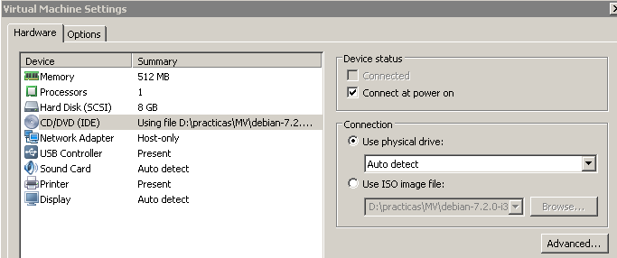
3) Crear la
carpeta D:\practicas\MV\OVF_debiantomato.
En el VMware Workstation, elegir el menú File -> Export to OVF.
Usar el nombre Debiantomato.ovf,
y salvarlo a la carpeta que acabamos de crear.
4) El
resultado de la exportación serán tres ficheros:
dos de metadatos (Debiantomato.mf
y Debiantomato.ovf )
y el fichero de disco virtual Debiantomato-disk1.vmdk.
Como el Workstation usa automáticamente
compresión al
generar el template, y como hemos evitado que exporte
también el
DVD de Debian 7, el tamaño final de tan sólo unos
360
MBytes.
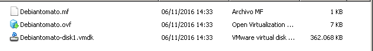
5) Cerramos
el VMware Workstation.
La importación del template OVF al servidor ESX se hace a
través del cliente vSphere de administración, que
está en la máquina XPadmin;
necesitamos, por tanto, que esta máquina pueda ver los
ficheros
de la carpeta del Windows 7 en la que hemos exportado el template OVF.
Como ambas máquinas (XPadmin
y Windows 7)
están conectadas a la red host-only, la opción
más
económica sería compartir por red la carpeta D:\practicas\MV\OVF_debiantomato.
Sin embargo, el usuario practicas
que empleamos en el Windows 7 no tiene permisos de
exportación de carpetas, por lo que deberemos copiar a XPadmin el
contenido de la carpeta.
6) Copiar,
arrastrándola, la carpeta D:\practicas\MV\OVF_debiantomato
al escritorio de la máquina virtual XPadmin.
7) En XPadmin, dentro del
cliente vSphere de administración del ESX, seleccionar el
menú File
-> Deploy OVF Template. Elegir el template Debiantomato.ovf de
la carpeta que acabamos de copiar. Pulsar Next. Pulsar de
nuevo Next
en la pantalla que muestra los detalles del template.
8) Dejar a
la máquina el nombre Debiantomato,
y pulsar Next.
9)MUY
IMPORTANTE: Por defecto, ESX crea una máquina
con disco thick
(que es más eficiente, a cambio de consumir más
espacio
de disco). Sin embargo, nosotros queremos minimizar el uso de disco en
el hipervisor ESX, así que seleccionamos disco thin.
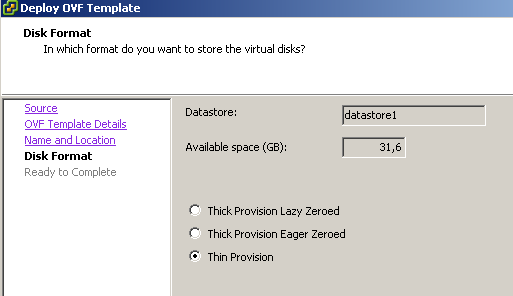
10)
Aparecerá una pantalla con el resumen de los
parámetros de configuración elegidos para el
despliegue. Pulsar Finish.
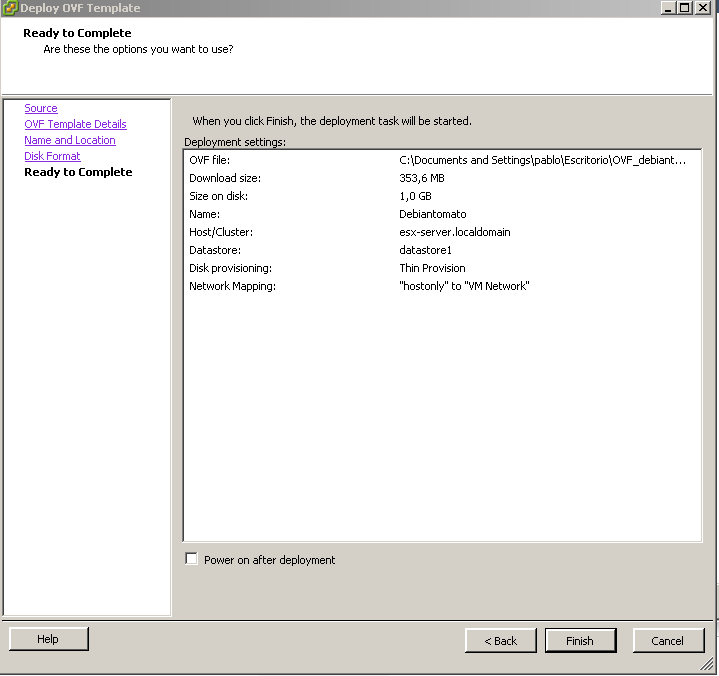
11) En el
inventario del servidor 10.0.0.60 aparecerá ahora el
servidor Debiantomato.
Seleccionarlo y pulsar en la pestaña Summary. En ella
podremos ver un resumen de los recursos (CPU, memoria y disco)
asignados a esta máquina virtual.
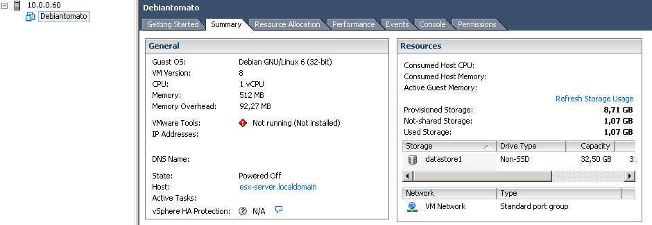
12) En el
recuadro Resources,
en el apartado Storage,
seleccionar datastore,
y con el botón derecho del ratón abrir el
menú Browse
Datastore. Se abrirá una ventana de explorador
de ficheros, en la que podremos ver la carpeta, y los cuatro ficheros,
que contiene a esta máquina virtual en el almacenamiento de
disco interno del hipervisor ESX.
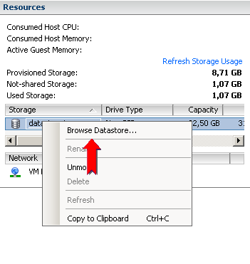
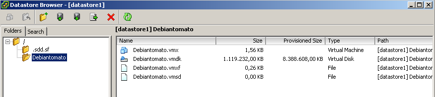
13) Cerrar
la ventana del explorador del datastore, y pulsar sobre cualquiera de
los dos botones de Power
On para arrancar el servidor (o, seleccionando Debiantomato,
pulsar el botón derecho para acceder al menú
contextual Power On).
14) Pulsar
ahora sobre la pestaña Resource
Allocation, en la que, con la máquina
arrancada, podemos ver cual es el consumo real de recursos que, en este
momento, tiene esta máquina virtual. En particular, observar
cómo la eficiente gestión de memoria en el
hipervisor hace que su consumo real de memoria en el host (el ESX) sea
menor que el consumo reportado en el guest (la máquina
virtual) por el sistema operativo de Debiantomato.
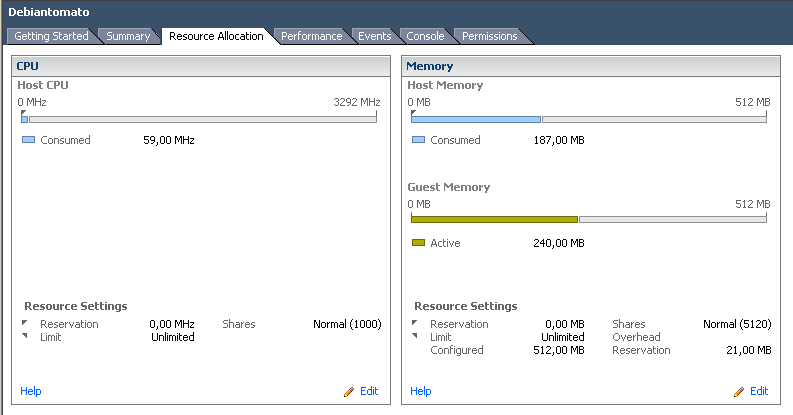
Tenemos ahora que resolver un pequeño problema en el
despliegue: en el Workstation hemos prototipado dos versiones distintas
del servidor Debiantomato
(con la base de datos en el mismo servidor y con la base de datos
separada), pero hemos usado en ambas la misma dirección IP
porque nunca las íbamos a tener encendidas al mismo tiempo.
Sin embargo, ahora en nuestro servidor ESX sí queremos tener
ambas versiones en explotación simultáneamente.
Necesitaremos, por tanto, cambiar la dirección IP del
servidor que acabamos de desplegar (NOTA: lo hacemos en este servidor
porque es el que menos cambios requerirá en el sistema
Tomatocart para que siga funcionando tras cambiar la IP).
15) Podemos
abrir en el cliente vSphere la consola del servidor Debiantomato usando
la pestaña Console,
pero vamos a hacerlo, en su lugar, abriendo una ventana de consola
separada (porque su operación es algo más
fluída que la de la pestaña). Para ello, pulsar
en la barra de íconos el botón que abre esta
ventana de consola.
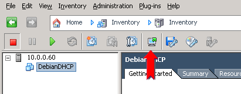
16) Hacer
login como root
en Debiantomato.
17) Ir al
directorio /etc/network,
y editar el fichero interfaces
para modificar su contenido tal como muestra la figura.
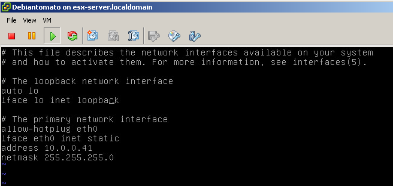
18) Ir al
directorio /etc
y modificar el fichero hosts,
tal como se indica en la figura.
19) Ir ahora
al directorio /var/www/tomatocart/includes,
y editar el fichero configure.php
para cambiar las direcciones del servidor web, tal como se muestra en
la figura. (NOTA: Si hubiésemos configurado las
máquinas desde el principio usando nombres y
resolución DNS, este paso no sería necesario).
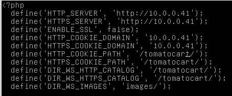
20)
Reiniciar el servidor, ejecutando reboot.
21) Una ve
que haya terminado el reinicio de Debiantomato,
comprobaremos que el sistema Tomatocart está funcionando
correctamente, usando en el Windows 7 el Firefox para acceder a
http://10.0.0.41/tomatocart
22) Cerrar
el Firefox del Windows 7, y cerrar la ventana de consola de Debiantomato.
Ahora que ya tenemos esta versión de Debiantomato
corriendo en el ESX, vamos a desplegar la versión que
utiliza dos servidores, exportando templates OVF para debiantomato y para
debiansql.
23) En el
Windows 7, crer el directorio D:\practicas\MV\OVF_debiantomatodual,
y debajo de él directorios debiantomato y debiansql.
24) En el
VMware Workstation del Windows 7 abrir, sin arrancarla, la
máquina virtual Debiantomato
y, en el gestor de instantáneas, hacer Go To a Separado en dos servidores.
25) Editar
los settings para dejar la lectura de CD/DVD como Auto detect.
26) Usar File -> Export to OVF
para exportar el template con el nombre Debiantomato-dual.ovf
al directorio D:\practicas\MV\OVF_debiantomatodual\debiantomato.
Una vez terminada la exportación, cerrar la
máquina virtual Debiantomato.
27) De igual
forma, abrir la máquina virtual debiansql y hacer Go To a la
instantánea Separado
en dos servidores. Editar los settings para dejar la
unidad de CD/DVD como Auto
detect.
28) Exportar
el template OVF como debiansql.ovf
al directorio D:\practicas\MV\OVF_debiantomatodual\debiansql.
Una vez terminada la exportación, cerrar la
máquina virtual.
29)
Arrastrar la carpeta D:\practicas\MV\OVF_debiantomatodual
desde el Windows 7 al escritorio de XPadmin.
30) Usar el
cliente vSphere en XPadmin, y el procedimiento visto en los puntos 7 a
10, para desplegar en el hipervisor ESX los servidores debiantomato y debiansql. (NOTA:
prestar especial atención a crear discos thin,
y no thick). Darles como nombre Debiantomato-dual
y Debiansql.
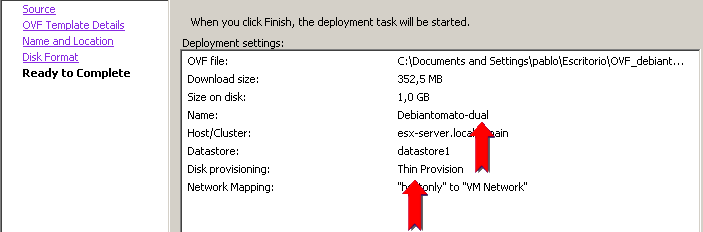
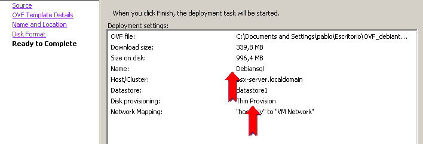
31) Una vez
desplegados, arrancar, desde el cliente vSphere, tanto el servidor Debiantomato-dual
como el servidor Debiansql.
32)
Comprobar que ahora también funciona el sistema Tomatocart
en http://10.0.0.21/tomatocart,
y que en paralelo, sigue funcionando http://10.0.0.41/tomatocart.
(NOTA: en un despliegue real, además de cambiar la
dirección IP, habríamos modificado
también el hostname del servidor 10.0.0.41, para evitar
tener operando a la vez dos servidores con el mismo nombre y distinta
IP).
33) En el
cliente vSphere, seleccionar ahora en el inventario el propio servidor
ESX (10.0.0.60), y comprobar cómo, a través de
las pestañas Summary
y Virtual Machines,obtenemos
una visión rápida de cuántas
máquinas virtuales tenemos corriendo, y de
cuántos recursos consume cada una de ellas.
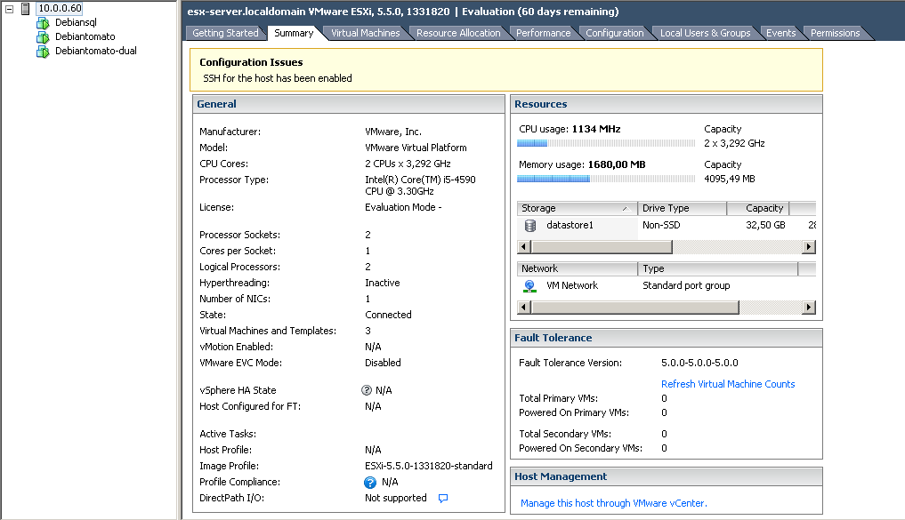
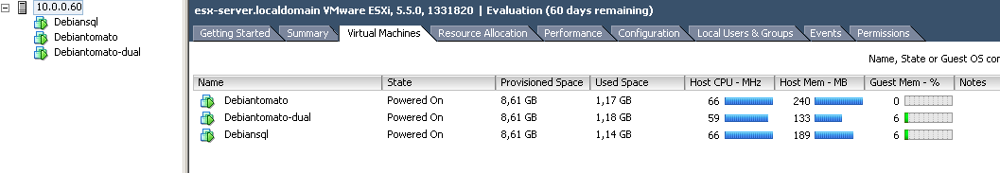
34) Para
terminar, apagaremoscada uno de los servidores. Como no tienen
instalados los VMware Tools, no pueden apagarse limpiamente usando el
botón Power
off, por lo que deberemos hacer login como root en cada uno de ellos (usando la pestaña Console) y apagarlo, ejecutando telinit 0.
35) Seleccionar en el inventario el servidor ESX y pulsar Shutdown para apagarlo. Como razón del apagado, introducir Apagado de rutina. En aproximadamente un minuto la máquina virtual ESX se habrá apagado.
36) Apagar, finalmente, la máquina de administración XPadmin.